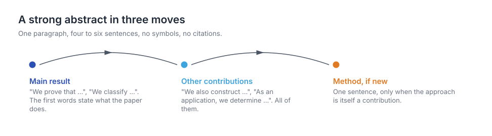

Guides · Writing
Writing the abstract
An abstract is a short, exact advertisement for the paper. Start with what you prove, give every main contribution, use strong verbs, and leave the symbols out.

Path · Writing your first paper · step 2 of 7
Next in this path: Writing the introduction, the motivation and the contribution →
The abstract is the most read part of your paper. Editors read it to choose referees. Researchers read it in the daily arXiv listing and decide in a few seconds whether to open the PDF. It must be short, exact, and it must make the contribution visible.
Principles#
Start with the result. The first words should say what the paper proves, constructs or determines. Do not open with "We study", "In this paper, we consider" or a sentence of general background. The reader already knows the field from the title.
Give every main contribution. If the paper has three main results, the abstract mentions all three, including the one announced in the title. Usually three or four sentences of content are enough.
Use strong verbs. Prove, construct, classify, characterize, determine, establish, extend, introduce. Avoid weak verbs that make a result sound routine: compute, deduce, give, study, discuss, consider.
No symbols, no formulas. Describe objects in words. "We classify the simple modules" is readable by everyone. A formula in an abstract is read by no one, and many listing services display it badly.
Do not undersell. Do not describe a main result as "a tool", "a technical lemma" or "a key step". Do not present your theorem as "a special case of" something else if it is not. If the result is new, say what it is.
Do not oversell. Every sentence of the abstract must be true and must be proved in the paper. No "for the first time" unless you have checked. No adjectives like "novel", "powerful" or "elegant". Let the result speak.
One consistent notation and terminology. Use the same names for the objects as in the title and in the theorems.
Prose, not a list. An abstract is one paragraph of continuous text. It usually has no citations.
A structure that works#
- Main result. "We prove that…" or "We classify…".
- Second and third contributions. "We also construct…", "As an application, we determine…".
- Optional: method or context in one sentence, only if it is itself a contribution ("Our approach relies on a new … which also applies to …").
Four to six sentences, often 80 to 150 words. Check the length limit of the journal.
Before and after#
The paper below is invented and its statements are only illustrative, but the problems in the first version are common.
Before. In this paper, we study certain properties of interacting particle systems. These systems are important in probability and statistical physics. We consider their long-time behavior and we give some conditions under which they converge. As a key step, we compute a spectral gap in a special case. We also discuss some examples.
What goes wrong:
- It opens with "we study" and with background the reader already knows.
- "Some properties" and "some conditions" hide the actual result.
- "Give", "compute" and "discuss" are weak verbs.
- A real computation is presented as a mere step.
After. We prove that a broad class of interacting particle systems on finite graphs converges to equilibrium exponentially fast, with a rate that does not depend on the size of the graph. We determine the optimal rate on complete graphs and on cycles, and we show that the uniform bound fails without the locality assumption by constructing explicit counterexamples. As an application, we obtain sharp mixing estimates for two classical models of opinion dynamics.
Every sentence now states a result. The reader knows in ten seconds what the paper contains.
Checklist#
- The first sentence states the main result.
- All main contributions appear, including the one in the title.
- Verbs are strong and precise.
- No symbols, formulas or citations.
- No result is presented as a mere tool or as a special case.
- Every claim is proved in the paper.
- One paragraph, within the journal's word limit.
The title#
The same rules apply in a few words. Name the objects and the type of result: "Classification of …", "Rigidity of …", "Integration of … by …". Avoid titles that are questions or jokes, and avoid "On some properties of …", which says nothing. A good title contains the words that a researcher in your area would type into a search engine.
Discussion
Questions, corrections and your own experience are welcome. Comments live in the forum, on GitHub Discussions, with Markdown and LaTeX.